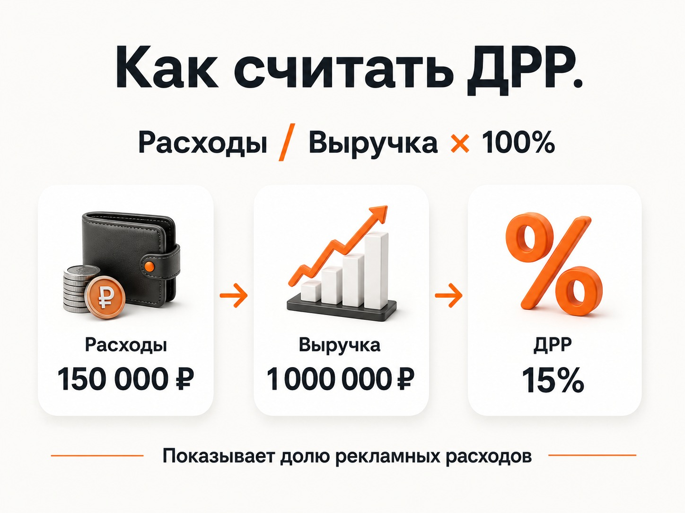
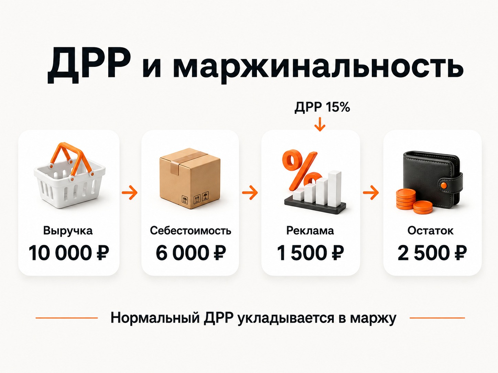

Блог о платном трафике
ДРР в рекламе: что это и как считать
ДРР - это доля рекламных расходов. Показатель показывает, какую часть выручки, полученной благодаря рекламе, бизнес потратил на привлечение этой выручки.
Формула простая:
ДРР = расходы на рекламу / выручка от рекламы × 100%
Например, компания потратила 100 000 рублей на рекламу и получила с нее продаж на 500 000 рублей:
100 000 / 500 000 × 100% = 20%
ДРР равен 20%. То есть из каждого рубля рекламной выручки 20 копеек ушло на рекламу.
Но низкий процент сам по себе еще не означает, что реклама прибыльная. Нужно учитывать маржинальность бизнеса, себестоимость товара, налоги и другие расходы.
Как рассчитать ДРР
Для базового расчета нужны всего два значения:
- сколько потрачено на рекламу;
- какую выручку принесли клиенты из этой рекламы.
Допустим, интернет-магазин за месяц потратил на Яндекс Директ 150 000 рублей. Покупатели, пришедшие из рекламы, сделали оплаченных заказов на 1 000 000 рублей.
150 000 / 1 000 000 × 100% = 15%

Если при тех же рекламных расходах выручка снизится до 600 000 рублей:
150 000 / 600 000 × 100% = 25%
Доля рекламных расходов вырастет до 25%. Поэтому рост ДРР обычно означает, что реклама относительно получаемой выручки становится дороже. Снижение показывает обратное.
Но сравнивать показатели нужно на одинаковых условиях. Если в одном месяце вы считаете только расходы рекламной системы, а в другом добавляете оплату подрядчика, производство креативов и другие затраты, сравнение получится некорректным.
Какие расходы включать в ДРР
Здесь нет одного правильного варианта для всех задач. Сначала нужно решить, что именно вы хотите измерять.
Если анализируется непосредственно эффективность рекламных кампаний в Яндекс Директе, логично считать: расход Яндекс Директа / выручка из Яндекс Директа. Так можно сравнивать кампании, категории товаров, периоды и рекламные каналы.
Если бизнес хочет понять полную экономику маркетинга, расчет можно расширить и включить оплату специалиста или агентства, создание рекламных материалов, сервисы аналитики и другие затраты, которые относятся к привлечению продаж.
Главное - заранее определить методику и не менять ее от месяца к месяцу.
Какую выручку использовать
В знаменателе должна находиться выручка, которую принесла анализируемая реклама.
Например, компания потратила на Яндекс Директ 200 000 рублей. Общая выручка бизнеса составила 5 млн рублей, но продажи клиентов из Директа дали только 800 000 рублей.
Нельзя считать: 200 000 / 5 000 000 × 100% = 4%. Так получится красивый, но бесполезный показатель.
Корректный расчет: 200 000 / 800 000 × 100% = 25%.
Поэтому для нормальной оценки рекламы нужно связывать рекламные данные с продажами. В интернет-магазине это обычно проще сделать через электронную коммерцию. В бизнесе с заявками и длительным циклом сделки могут понадобиться CRM, коллтрекинг и сквозная аналитика.
Какой ДРР считается хорошим
Универсального хорошего ДРР не существует. Фраза «ДРР ниже 100% означает, что реклама прибыльная» слишком упрощает экономику бизнеса.
Допустим, интернет-магазин получил 1 000 000 рублей выручки при рекламных расходах 250 000 рублей. ДРР - 25%. Но если себестоимость проданных товаров составляет 800 000 рублей, после себестоимости остается только 200 000 рублей. А на рекламу было потрачено 250 000 рублей.
При ДРР 25% продажи уже убыточны еще до учета зарплат, налогов, аренды и других расходов. Поэтому допустимый показатель нужно определять от экономики конкретного бизнеса.
ДРР нужно сравнивать с маржинальностью
Допустим, товар продается за 10 000 рублей. Себестоимость вместе с переменными расходами составляет 6 000 рублей. На покрытие рекламы, постоянных расходов и прибыли остается 4 000 рублей, то есть 40% выручки.
Если ДРР равен 15%, рекламные расходы на такую продажу составят 1 500 рублей. После себестоимости и рекламы остается: 10 000 - 6 000 - 1 500 = 2 500 рублей.

Если ДРР вырастет до 45%, реклама будет стоить уже 4 500 рублей на каждые 10 000 рублей выручки: 10 000 - 6 000 - 4 500 = -500 рублей. Продажа становится убыточной.
Поэтому вопрос должен звучать не «какой ДРР считается нормальным в моей нише», а «какой ДРР выдерживает экономика моего бизнеса».
Почему слишком низкий ДРР тоже не всегда хорошо
| Вариант | Расходы | Выручка | ДРР |
|---|---|---|---|
| А | 50 000 ₽ | 500 000 ₽ | 10% |
| Б | 300 000 ₽ | 2 000 000 ₽ | 15% |
Если смотреть только на процент, вариант А лучше. Но бизнес может получать значительно больше денег во втором варианте.
Снижать ДРР любой ценой поэтому неправильно. Можно оставить только самые дешевые продажи, сильно ограничить рекламу и получить красивый показатель вместе с падением оборота. Для бизнеса обычно нужен баланс между ДРР, объемом продаж и итоговой прибылью.
ДРР и ROAS - в чем разница
ДРР и ROAS смотрят практически на одно и то же с разных сторон. ДРР показывает, какую долю рекламной выручки съела реклама. ROAS показывает, сколько выручки принес каждый вложенный в рекламу рубль.
При расходах 100 000 рублей и выручке 500 000 рублей: ДРР = 20%, а ROAS = 5. Каждый рекламный рубль принес 5 рублей выручки. Если ROAS отображается в процентах, это будет 500%.
При одинаковых исходных данных эти показатели обратны друг другу: чем ниже ДРР, тем выше ROAS. Но оба показателя работают с выручкой и сами по себе не говорят, сколько чистой прибыли заработал бизнес.
Чем ДРР отличается от CPA и CPL
CPA отвечает на другой вопрос: сколько стоило одно целевое действие. Например, при рекламных расходах 100 000 рублей и 50 заявках CPA = 100 000 / 50 = 2 000 рублей.
CPL показывает стоимость лида и по смыслу близок к CPA, если в качестве целевого действия считается заявка. ДРР появляется дальше по воронке, когда уже известен денежный результат.
Можно получать дешевые заявки, но плохие продажи. CPA будет выглядеть отлично, а ДРР окажется высоким. И наоборот, дорогие лиды могут приносить крупные сделки и давать нормальную долю рекламных расходов.
ДРР в Яндекс Директе
В Яндекс Директе ДРР можно использовать не только как показатель для анализа статистики. Он доступен как метрика в отчетах вместе с расходами, конверсиями, CPA и доходом.
Кроме того, в стратегии «Максимум конверсий» можно использовать долю рекламных расходов как ограничение. Алгоритм будет стремиться получать максимальный объем конверсий, придерживаясь заданного значения.
Чтобы такая оптимизация имела смысл, Директ должен получать данные о денежной ценности конверсий. Для интернет-магазина это может быть электронная коммерция, для других проектов - передаваемый в Метрику доход от целевого действия. Если доход передается неправильно, автоматическая стратегия будет оптимизироваться по неправильной экономике.
На каком уровне считать ДРР
Одного общего показателя по всей рекламе обычно мало. Полезно смотреть его на нескольких уровнях:
- весь рекламный канал;
- отдельные кампании;
- категории товаров или услуг;
- регионы, если экономика заметно отличается;
- периоды времени.
Допустим, общий ДРР Яндекс Директа равен 18%. Но внутри может оказаться: категория А - 10%, категория Б - 17%, категория В - 42%. Среднее значение скрывает проблему третьей категории.
Основные ошибки при расчете ДРР
Первая ошибка - использовать всю выручку компании вместо выручки, связанной с рекламой. Вторая - сравнивать рекламные расходы одного периода с продажами другого, не учитывая цикл сделки.
Третья - считать любой ДРР ниже 100% хорошим. Четвертая - сравнивать товары с совершенно разной маржинальностью по одному общему нормативу. Пятая - пытаться снизить показатель любой ценой. Шестая - передавать в Яндекс Директ некорректный доход и затем использовать его для автоматической оптимизации кампаний.
Как использовать ДРР для оценки рекламы
ДРР - это связующее звено между рекламным кабинетом и деньгами бизнеса. CTR показывает реакцию на объявления. Конверсия показывает, как трафик превращается в целевые действия. CPA показывает стоимость этих действий. ДРР связывает расходы уже с полученной выручкой.
Поэтому хороший отчет по рекламе заканчивается не количеством кликов и даже не стоимостью заявки.
В идеальной ситуации цепочка выглядит так: расходы -> заявки -> продажи -> выручка -> ДРР -> прибыль.
Для интернет-магазинов такую систему обычно построить проще. Для услуг, B2B и проектов с длинным циклом сделки потребуется связать рекламную аналитику с CRM и реальными продажами.
И только после этого ДРР становится действительно полезной бизнес-метрикой, а не еще одним процентом в рекламном отчете.